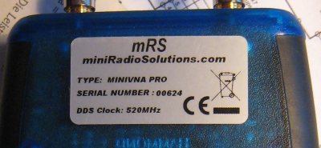

Aquí se muestran los valores técnicos mínimo y máximo para la transmisión y pérdida de retorno.
Aquí se muestran los valores técnicos mínimo y máximo para la fase.
Si el analizador está conectado y configurado para el puerto de comunicación correcto, se muestra la versión de firmware interna. En caso contrario se muestra un mensaje de error.
Si el analizador está conectado y configurado para el puerto de comunicación correcto, se muestra el voltaje actual de la batería interna.
Determina el número de pasos que se utilizan durante la creación de los datos de calibración. Un valor de 2,000 da para la mayor parte de la utilización con buenos resultados. La resolución de un paso de calibración es el rango de exploración de 100 kHz a 200 MHz dividido por 2.000.
Incrementar este número se traduce en una gama de frecuencias más pequeña por cada punto de calibración. Aumentar el número de puntos de calibración sólo ralentiza la creación de datos de calibración, no las exploraciones periódicas.
El valor introducido aquí depende de la frecuencia de reloj interno DDS de los analizadores. Sólo un número muy pequeño de analizadores tienen un DDS de 500 MHz. Todos analizadores posteriores tienen un DDS de 520MHz. La frecuencia DDS está por lo general en la parte trasera, en la etiqueta del analizador.

para una buena calibración de frecuencia utilice la función de calibración de frecuencia del vna/J.
Desde la versión 2.3 del firmware del miniVNApro, el analizador es compatible con cualquier ancho de escaneo. Antes de esta versión, los anchos de exploración debían ser un múltiplo de 100. Si el analizador tiene un firmware >= 2.3 (ver información en el campo Firmware info) marque la casilla de verificación "> = 2.3".
Desde la versión 2.3 del firmware del miniVNApro, también es posible reducir la potencia del generador en 6 dB en el modo de transmisión, para superar el problema de potencia del generador demasiado alta. Esto reducirá el rango dinámico en el modo de transmisión de 6dB a aproximadamente 84dB. Si la casilla "Fija 6dB" está marcada, la potencia del generador se reduce en 6 dB. Los archivos de calibración debe ser regenerados y no deben mezclarse con archivos regulares de calibración.
El tiempo en milisegundos entre la petición de apertura a la interfaz y la respuesta de la interfaz. Si este tiempo es excedido, se emite un error. Por lo general no debe cambiarse!
El tiempo en milisegundos entre el envio de comandos al analizador. Por lo general no debe cambiarse!
El tiempo en milisegundos entre la solicitud de un comando al analizador y la respuesta del analizador. Si este tiempo se supera, se emite un error. Por lo general no debe cambiarse!
La velocidad de transmisión usada para comunicar con el analizador. Por lo general no debe cambiarse!
Todos los cálculos internos se realizan usando la resistencia de referencia introducida. Puede ser un valor complejo con parte real e imaginaria. Por lo general, se introduce 50 + i0.